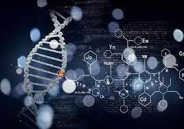

Біохімія
Біохімія — наука про хімічний склад організмів та їхніх складових частин та про хімічні процеси, що протікають в організмах.
Напрямки
- Амінокислоти, пептиди та білки (методи виділення та синтезу, дослідження будови, властивостей; синтез пептидів, вивчення зв'язку їх будови з функцією).
- Нуклеїнові кислоти (виділення, дослідження будови, синтез і вивчення хімічних властивостей природних і модифікованих генів, нуклеозидів, нуклеотидів, полінуклеотидів та їхніх аналогів).
- Ліпіди (виділення, дослідження будови, синтез).
- Вуглеводи та їхні похідні. Змішані біополімери (виділення, дослідження будови, хімічних властивостей, синтез).
- Стероїдні гормони (виділення, хімія стероїдів, їх хімічна трансформація, синтез, вивчення механізмів дії), вітаміни, коферменти.
- Хімічні дослідження природної сировини (рослинної та мікробіологічної) для розроблення біологічно активних речовин.
- Нові лікарські препарати (пошук, синтез і вивчення нових ефективних лікарських препаратів, розроблення методів виділення та хімічної трансформації).
- Хімічні препарати для хімізації сільського господарства (пестициди, інсектициди, гербіциди, акарициди, фунгіциди та інші препарати для боротьби зі шкідниками і хворобами рослин; регулятори життєдіяльності комах; природні феромони, атрактанти, репеленти та інші; синтетичні регулятори росту рослин; дефоліанти, десиканти та ін. регулятори окремих функцій рослин; нові ефективні препарати для підвищення продуктивності тваринництва).
- Природні та синтетичні низькомолекулярні біорегулятори та їхні аналоги.
